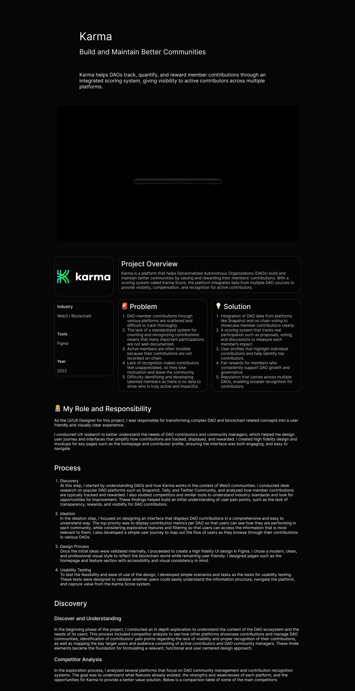
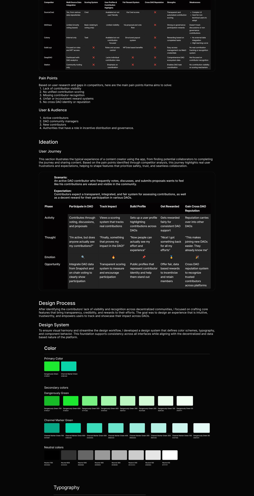
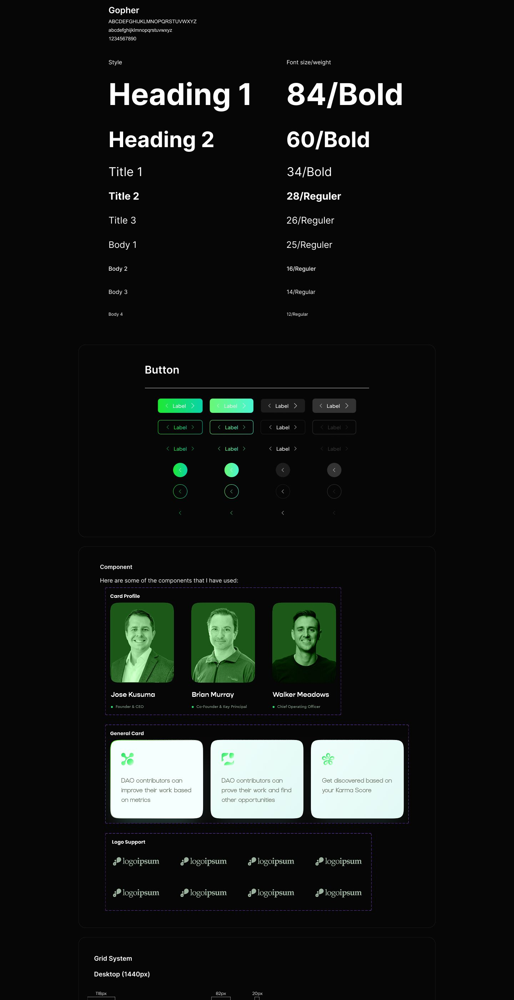
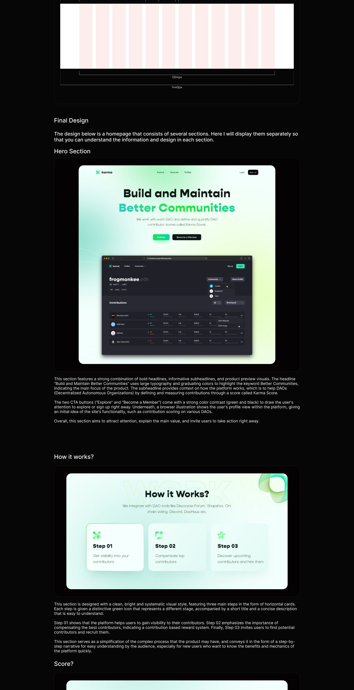
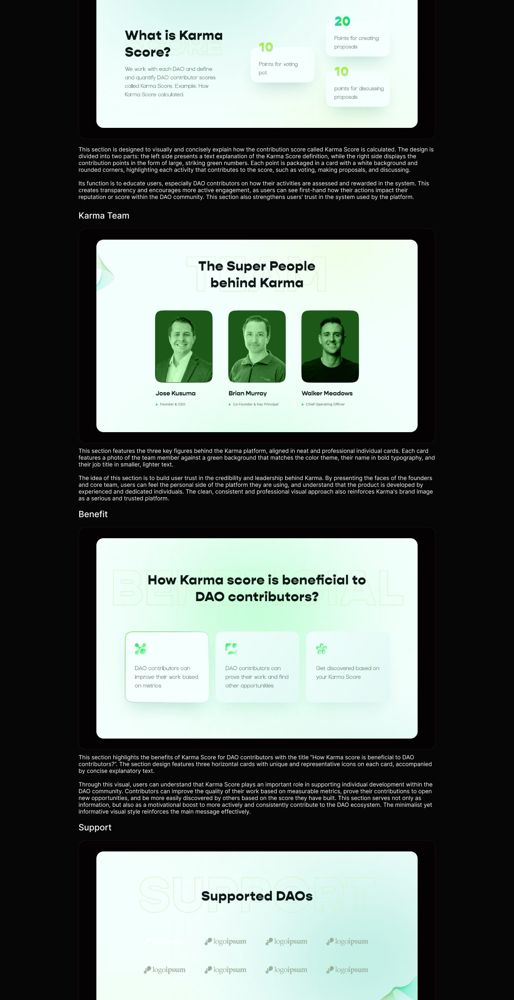
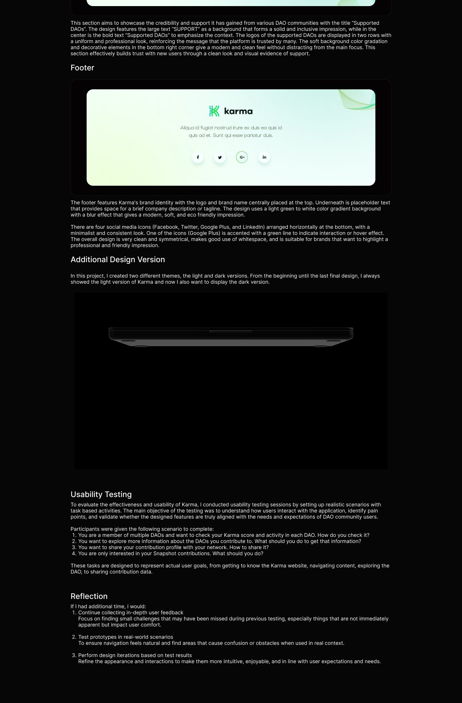

Web3 community platform
Karma
A web platform for building and maintaining better communities.
Overview
Karma helps decentralized organizations build healthier communities by valuing what members actually contribute. A scoring system gathers activity from the places DAOs already work, then turns it into visibility, recognition, and fair rewards for active contributors.
The case study walks the full arc, from research into how Web3 communities measure contribution, through user flows and wireframes, to a complete high-fidelity UI in a calm green system.
Inside the case study
- Competitive research
- User flows
- Wireframes
- Landing pages
- Community dashboard UI
- Annotated design decisions
The case study
The full annotated board: research, flows, explorations, and final screens.





